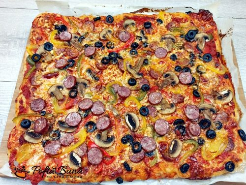

Pizza usor de facut

Pizza cu de toate si blat pufos, reteta romaneasca, facuta in tava de cuptor, mai buna decat
la pizzerie. Cu aluat facut acasa, sos de rosii cu busuioc, si de toate deasupra, sa fie din
belsug: masline, salam, cascaval sau mozzarela, ardei gras, ciuperci
Ingrediente
Pentru aluat:
- 1kg de faina
- 30ml de ulei
- 1 ligurita rasa de sara
- 7g drojdie usacata sau 25g de drojdie proaspata
- 600ml de apa
Pentru topping
- sos de pizza
- mozzarela sau cascaval
- 5 ciuperci feliate
- ardei gras
- 100g de masline feliate
- 2 carnati afumati
- gris
Pentru sosul de pizza
- 500g de sos de rosii gros
- cateva frunze de busuioc
- 20ml de ulei de masline
- 10g de ceapa
- 1 catel de usturoi
- sare
- piper
- jumatate de lingurita de oregano
Pasi de preparere
- Punem drojdia uscata in faina, o amestecam, intr-o parte punem sarea si o amestecam acolo. Faina trebuie sa fie la temperatura camerei, apa e bine sa fie calduta.
Turnam toata apa peste faina, apoi amestecam.
In timp ce framantam aluatul adaugam uleiul putin cate putin. Putem pune aluatul pe masa, pentru ca se framanta mai bine. Impaturim aluatul de la margine spre mijloc.
Mai putem unge masa cu ulei, daca aluatul incepe sa se lipeasca.
Eu am framantat aluatul pentru 5 minute.
Punem aluatul intr-un vas, il acoperim cu un servet sau cu un capac si il tinem la loc cald. Asteptam ca aluatul sa creasca.
- Intr-un blender punem sucul de rosii, ceapa, usturoiul, busuiocul, uleiul, un varf de lingurita de sare, oregano uscat si putin piper. Daca nu mancati picant, nu adaugati piper.
Eu am folosit un suc de rosii gros, facut de mine acasa. Daca nu aveti suc de rosii de casa, recomand sa folositi passata di pomodorro sau rosii in bulion.
Pornim blenderul si mixam pana cand ajungem la o consistenta uniforma
- Presaram masa cu gris.
Am impartit aluatul in doua bucati. Este aluat suficient pentru 2 tavi mari de aproximativ 30×40 cm.
Intindem prima jumatate de aluat, apoi o punem in tava de cuptor pe care am tapetat-o cu hartie de copt. Intindem bine aluatul cu degetele unse cu ulei.
- Grisul va face ca pizza sa fie crocanta la exterior, iar aluatul cand va creste va fi pufos la interior. Recomand sa folositi cel mai fin gris pe care inl gasiti.
Punem din belsug sos si il intindem.
Punem mozzarella. Pentru o tava eu am folosit in total 400 g de mozzarella si cascaval.
Vom pune feliile de carnati sau salam, ardei gras, feliile de ciuperci, maslinele feliate
- Punem tava la cuptor la foc maxim. Se coace in 15 – 20 de minute.